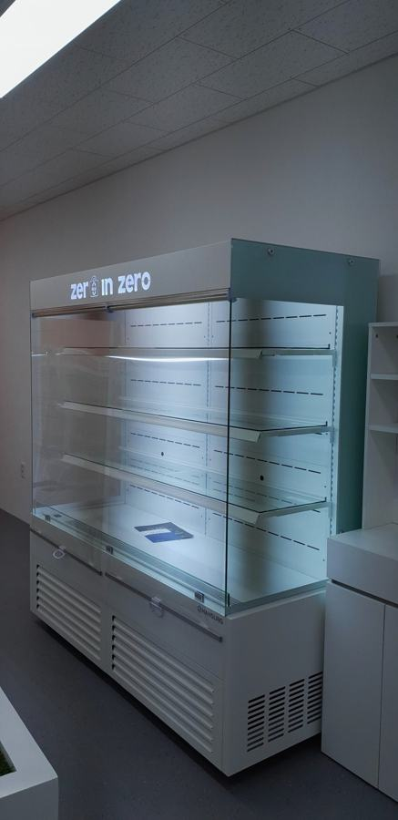

오픈쇼케이스
냉장평대 전기세, 위가 열린 구조라서 생기는 새는 곳

냉장평대 전기세는 판매 상품에 필요한 것보다 낮은 설정 온도, 열기가 많은 설치 자리, 마감 후에도 열려 있는 윗면에서 대부분 새어 나갑니다. 이 세 가지를 먼저 정리하고, 새로 들이신다면 냉각 방식과 커버 구조까지 상품에 맞춰 고르시는 것이 가장 확실한 절약입니다.
안녕하세요. 냉장평대와 오픈쇼케이스를 맞춤 제작하는 한성쇼케이스입니다.
마트, 반찬가게, 샐러드 매장 사장님들께 자주 듣는 말이 있습니다. "평대 한 대 들였더니 전기요금 고지서가 확 올랐어요." 위가 트여 있는 장비라 어쩔 수 없다고 생각하시기 쉽지만, 실제 현장을 보면 운영 습관에서 새는 경우가 적지 않습니다.
냉장평대는 손님이 위에서 내려다보고 바로 집어 가는 구조라 문 달린 쇼케이스와는 냉기가 빠지는 길이 다릅니다.
그래서 절약 방법도 평대에 맞춰 따로 봐야 합니다.
오늘은 냉장평대 전기세가 어디서 늘어나는지, 사장님이 내일부터 바로 바꿔 볼 수 있는 것부터 정리해 보겠습니다.
1. 상품보다 낮게 잡힌 설정 온도
평대는 용도에 따라 필요한 온도 범위가 다릅니다. 야채, 과일, 반찬을 올리는 평대는 영상 2도까지 조절되는 제품이 많이 쓰이고, 정육과 생선용은 영하 2도 정도까지 내려가는 제품이 주로 쓰입니다.
문제는 반찬이나 과일을 올리면서 혹시 몰라 온도를 최저로 맞춰 두는 경우입니다. 필요 이상으로 낮추면 압축기가 쉬지 못하고 돌아가 전기 사용이 늘고, 채소는 오히려 냉해를 입기도 합니다.
지금 올려 둔 상품 기준으로 설정이 맞는지 한 번 확인해 보세요.
- 판매 상품이 바뀌었다면 설정 온도도 다시 보세요.
- 최저 설정이 늘 정답은 아닙니다.
2. 평대 주변의 열기와 바람
평대는 윗면이 열려 있어 주변 공기의 영향을 그대로 받습니다. 출입문 바로 앞이라 바깥 공기가 계속 들어오거나, 천장 냉난방기 바람이 평대 위로 바로 떨어지면 냉기 층이 흐트러져 장비가 더 일을 하게 됩니다.
조리 기구 옆이나 직사광선이 드는 창가도 마찬가지입니다.
또 하부나 뒤쪽 열이 빠지는 통풍구가 박스나 재고로 막혀 있지 않은지 살펴보세요. 열이 빠지지 못하면 같은 온도를 유지하는 데도 더 많은 전기가 듭니다.
- 냉난방기 바람이 평대 위로 바로 오지 않게 방향을 돌리세요.
- 통풍구 앞에 재고를 쌓지 마세요.
- 출입문과 평대 사이 거리를 확인하세요.


3. 마감 후 열린 윗면이 가장 큰 구멍입니다
영업 시간에는 손님이 집어 가야 하니 열려 있는 것이 맞습니다. 하지만 문을 닫은 뒤에도 윗면이 그대로 열려 있으면 밤새 냉기가 빠져나갑니다.
오픈형 장비에는 마감 후 덮는 나이트 커버를 쓸 수 있는데, 이것만 꾸준히 덮어도 밤사이 장비 부담이 줄어듭니다.
영업 중에는 상품을 평대 가장자리 높이 위로 쌓지 않는 것이 중요합니다. 냉기는 무거워 평대 안쪽에 고여 있는데, 상품이 높게 솟아 있으면 윗부분은 냉기 밖에 놓이게 되고 그만큼 온도 관리가 어려워집니다.
4. 새로 들인다면 냉각 방식부터
직냉식은 일반 매장에서 많이 쓰이는 방식으로 전력 유지 비용이 적은 편이지만, 성에가 끼기 때문에 주기적으로 관리를 해 주셔야 합니다.
성에가 두껍게 쌓이면 냉각 효율이 떨어지니 관리 습관이 전기세와 직결됩니다.
간냉식은 냉각 속도가 빠르고 성에가 생기지 않아 관리가 편합니다. 다만 냉각팬으로 공기를 순환시키는 방식이라 상품 수분 손실이 클 수 있고 가격대도 높은 편입니다.
랩 포장된 반찬인지, 노출된 채소인지에 따라 맞는 쪽이 달라지니 상품 기준으로 고르세요.
체크리스트
- 판매 상품에 맞는 설정 온도
- 냉난방기 바람과 출입문 위치
- 하부·뒤쪽 통풍구 막힘 여부
- 마감 후 나이트 커버 사용
- 상품 적재 높이
- 직냉식 성에 관리 주기
현장에서 자주 보는 경우: 용도와 냉각 방식을 따지지 않고 들인 평대
평대쇼케이스 상담을 하다 보면 사이즈만 보고 들였다가 용도가 맞지 않아 고민하시는 경우를 자주 봅니다.
야채·과일·반찬용은 영상 2도까지, 정육·생선용은 영하 2도까지 조절되는 제품이 주로 쓰이는데, 이 구분 없이 고르면 필요 이상으로 장비를 돌리게 됩니다.
냉각 방식도 마찬가지입니다. 직냉식의 낮은 전력 유지 비용과 성에 관리 부담, 간냉식의 빠른 냉각과 수분 손실을 함께 비교해 매장 상품에 맞는 쪽을 고르시도록 안내하고 있습니다.
초보 사장님일수록 직접 보고 상담받은 뒤 결정하시길 권합니다.



자주 묻는 질문
나이트 커버는 기존 평대에도 달 수 있나요?
평대 크기와 구조에 따라 다릅니다. 가로·세로 치수와 사진을 보내 주시면 맞는 커버를 쓸 수 있는지 확인해 드립니다.
직냉식 평대 성에는 얼마나 자주 관리해야 하나요?
매장 습도와 문 여닫는 정도에 따라 쌓이는 속도가 다릅니다. 성에가 눈에 띄게 두꺼워지기 전에 정리하는 습관을 들이시면 냉각 효율을 지키는 데 도움이 됩니다.
평대를 두 대 쓰는데 한 대만 유난히 전기를 많이 먹는 것 같아요.
설치 자리의 열기, 통풍구 막힘, 설정 온도 차이부터 비교해 보세요. 그래도 차이가 크면 부품 상태를 점검받아 보시는 것이 좋습니다.
매장 조건에 맞춰 만드는 한성쇼케이스
원하시는 제품 사진과 설치할 공간 사진만 보내 주셔도 매장에 맞는 구성을 추천해 드립니다.
- 전국 240여 개 A/S 전담 센터 운영
- 본사 대량 자재 매입으로 품질 대비 합리적인 가격
- 유럽제·삼성 냉각 콤프레셔 적용
- 국내 최초 쇼케이스 전문 디자이너 상주
매장 폭과 원하는 진열 구성을 알려 주세요. 실측과 견적을 안내해 드립니다.
031-986-2458